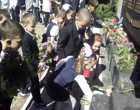

<
Найкращі миті шкільного життя
Усі діти не можуть мати однакові здібності. І найважливіше завдання школи — виховання здібностей. В.Сухомлинський

Громадянська просвіта молоді
Участь у тренінгах, присвячених формуванню культури громадського активізму.Включення учнів у активну творчу діяльність, спрямовану на розбудову власної держави, її впорядкування і зміцнення.Встановлення дружніх партнерських відносин з представниками інших країн та народів, культивування кращих рис української ментальності, розвитку самобутності кожної особистості.
